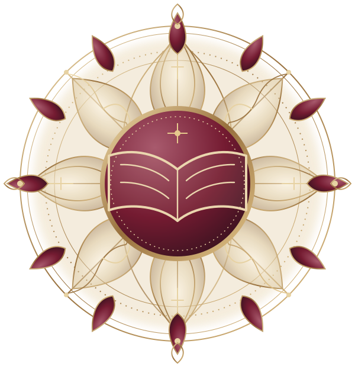

FOLIO Ⅰ ／ FREEDOM
教育と自由
教育は、国家に都合のよい人間を製造するための制度ではない。人が自ら考え、自分の人生を選び取るための営みである。
「その人が、自分自身になれるようにすることが教育です。」
帝國教育廳は、日ノ本帝國の教育に關する情報を集約し、學びの機會と学問の自由、そして次代へ受け継がれる文化の礎をご案内します。

教育は、知識を授けるだけの営みではありません。人が自ら考え、選び、他者と共に生きるための土壌です。
本廳が重んじるのは、古い知識をただ守ることでも、新しい思想を無条件に受け入れることでもありません。先人の積み重ねを知り、その上で何を受け継ぎ、何を選び取るのかを、一人ひとりが考えられる環境を整えることです。
身分や家柄、性別、年齢によって学ぶ価値を決めず、学びたいと願う者に学ぶ場所をひらく。その理念を、教育行政と文化の継承の根幹に据えています。
帝國教育廳の沿革と役割を読む →九条院春臣の教育思想を手がかりに、帝國教育廳が大切にする学びの姿勢を紹介します。
答えを与えるだけでなく、問いを持ち、自分の頭で考えることを尊重します。
身分・家柄・性別・年齢によって、学問に向かう意志を妨げないこと。
古典を知り、西洋の学問にも向き合い、比較しながら自ら選び取ること。
教育を国家に都合のよい人間を作る道具とせず、思想と探究の自由を守ること。
九条院春臣が学び、思索を深めた知の領域。星を選ぶように、ひとつずつ辿ってみてください。
春臣は幼少期から古典・漢学に親しみ、先人たちが遺した言葉と思想を学んだ。古典を絶対視するのではなく、時代を越えて読み直し、自ら考えるための礎として向き合っている。
教育と自由、教師と学生、古典と近代。『教育侖』に通じる思想の扉を選び、言葉を辿ってください。
THE ART OF EDUCATION
BY KŌJŌIN HARUOMI教育は、国家に都合のよい人間を製造するための制度ではない。人が自ら考え、自分の人生を選び取るための営みである。
教育を、他者を理想の形へ作り替えるための技術にしない。学ぶ者が自ら考え、自身の人生を選択するための力を育む。
九条院春臣が大切にしたのは、どちらか一方を選び、もう一方を捨てることではありませんでした。
先人の言葉、歴史、文学、思想。古典は過去に閉じたものではなく、時代を越えて読み直し、現在を考えるための知の源泉である。
西洋思想・哲学・自然科学・近代教育学。新しい知の体系に向き合い、観察し、比較し、問いを深めることで世界の見方を広げる。
「人を作るのが教育ではありません。その人が、自分自身になれるようにすることが教育です。」— 九条院 春臣
教育者・思想家・文学者。近代日ノ本帝國における教育制度の礎を築き、「日ノ本帝國教育の祖」と称される人物です。
教育を国家に都合のよい人間を育てるための制度ではなく、人が自ら考え、自らの人生を選び取るための営みと捉えました。古典と近代学問の双方に学び、学問の自由と文化の継承を重んじています。
知りたい主題から、教育行政・機關・思想・記録へ。各案内を目的別に整理しています。
帝國大學、帝都女學院など、日ノ本帝國の教育機關をご案内します。
機關一覧を見る 02教育の目的、教師と学生、古典と近代学問についての考え方を紹介します。
教育理念を読む 03教育史、教育人物録、著作、研究資料を主題別に整理します。
史料室を閲覧する 04行政情報、統計、告示、刊行物を確認するための公開窓口です。
公表資料の案内 05教育廳の理念と、長官・九条院春臣について紹介します。
本廳について 06九条院春臣の代表的著作をはじめ、教育思想を知るための文献案内です。
文献案内を読む九条院塾から帝國大學へ。教師と学生、学問と文化を結ぶ場所を辿ってみてください。
九条院春臣が開いた私塾。春臣は塾生たちと学問を共にし、問いを持つことや、自ら考えることを大切にした。中原壱葉もかつてこの塾で学んだ。
学びの目的に沿って、教育行政・教育機關・思想と史料の入口を辿れます。
教育制度や機關を知りたい方、教育思想を読みたい方、史料を探したい方。それぞれの目的に合わせた入口を用意しました。
古典・歴史・文学に学び、積み重ねられた知識と思想を受け取る。
近代思想・自然科学・西洋学問など、異なる知の体系と向き合う。
正しさを権威に預けず、比較し、考え、自分の言葉で判断する。
学びを個人の内に閉じず、文化と思想を未来へつないでいく。
教育に關する情報を、確かな根拠とともに届けるために。
教育制度・行政に關する資料を、内容と出典を確認した上で整理します。
教育統計は、数字を通じて帝國の学びの姿を読み解く資料です。
教育廳からの告示・公表文書を、読みやすく整理して紹介します。
教育に關する刊行物・研究資料を紹介します。
古典・歴史・自然・藝術。四つの方位から、帝國の学びを巡る。星盤に触れれば、それぞれの知の扉がひらかれます。
先人の言葉と思想を読み、時代を越えて受け継がれた知の根を辿る。古典は過去に閉じたものではなく、今日を考えるための灯である。
史料室をひらく →書架のあいだに残された三つの問い。教育廳の記録を読み、言葉を辿り、封じられた頁をひらかれよ。知ることそのものが、鍵となる。
封緘文庫の探索を開始する ✧教育廳サイト内の案内・機關・史料項目を検索できます。